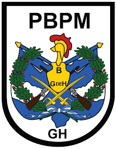

Información Personal




"Nacidos para Vencer"
MISIÓN
Conducir operaciones bélicas y no bélicas el día "D" a la hora "H", con el
propósito de contribuir a mantener la independencia, la soberanía, la
integridad del territorio, la paz y seguridad interior y exterior en su área
de responsabilidad operacional; y a orden del EMDN en cualquier parte de la
República de Guatemala.
“Con dignidad, respeto y transparencia,
defendemos a la Nación” La primera guarnición que existió en
el departamento de Petén, fue la que dejó el señor Melchor de Mencos en el
año 1,763 con cincuenta (50) hombres, esta unidad tuvo que actuar cuando los
piratas ingleses ingresaban en territorio petenero y establecían campamentos
madereros. Mediante Decreto de fecha 16 de junio de 1,829, al departamento
de Petén como parte de las Verapaces le correspondió un Batallón de
Infantería, el cual fue dividido en la siguiente forma una (1) Compañía para
Cobán, una (1) Compañía para Salamá y una (1) Compañía para Petén, la cual
tuvo su sede en Ciudad Flores.
"Victoriosos de Principio de a
Fin"Llegada la revolución de 1871 se creó el Ejército como
institución organizada y en vías de profesionalización, el Gobierno
Revolucionario dispuso dividir en Comandancias locales el territorio
nacional, con el propósito de controlar y mantener el orden en los
departamentos y en base a los acontecimientos y acciones del Capitán General
Rafael Carrera, realizadas en esta región oriental, se creó la Comandancia
local de Zacapa, ocupando primeramente las instalaciones donde actualmente
se encuentra el Hospital Regional, posteriormente las instalaciones que se
encuentran frente al parque central hasta en el mes de noviembre de 1954 y a
partir de esa fecha se encuentra situada en el local que ahora ocupa.
"Soldado de Oriente"a Tercera
Brigada de Infantería "General Manuel Maximiliano Aguilar Santamaría",
creada con el nombre de Zona Militar de Jutiapa y que también se denominó
"Cuartel de Jutiapa", en el año de 1856 por el Capitán General Rafael
Carrera, presidente constitucional de la República, en el lugar que hoy
ocupa el parque "Rosendo Santa Cruz" y en el año de 1861 fue construido el
edificio denominado el "cuartelón" por el Coronel Leandro Navas, lugar que
ocupo posteriormente la Comandancia, hasta el año de 1964, fueron adquiridos
los terrenos de la finca Cerro Gordo, terrenos que ocupa actualmente. El 23
de marzo de 1945 fue creada la Zona Militar No. 3 con jurisdicción en los
departamentos de Jutiapa, Jalapa y Santa Rosa, por la junta revolucionaria
de gobierno, desde ese momento se celebra cada mes de marzo un aniversario
más de esta gloriosa brigada de infantería, la cual ha cumplido sus
funciones de una manera notable.
"Somos el hogar de los soldados Xancatales,
hombres y mujeres"En el año 1908, se fundó el "Batallón de
Caballería", en el predio que hoy ocupa la terminal de buses de Mazatenango;
trasladándose en el año 1940 al edificio conocido por los mazatecos como el
"Cuartelón", predio que anteriormente, fue parte de la plaza central
(parque), y en cuyos terrenos de terracería se celebraron las fiestas del
tradicional y centenario carnaval. Como consecuencia del movimiento
revolucionario del 20 de octubre de 1944, El Ejército se dividió en una zona
central y seis zonas militares que integraban cada una diferentes áreas
regionales, que comprendían unidades de infantería, artillería y caballería,
tanto de sangre como blindada.
¡Con fe en la victoria! "KAIBIL"La
fundación
de la Quinta Brigada de Infantería "Mariscal Gregorio Solares", se remonta a
la creación del Ejército en Guatemala, el 16 de junio de 1,826, cuando fue
decretada la organización del Ejército en el territorio guatemalteco y la
creación de Batallones en Sololá y Suchitepéquez. El 22 de marzo de 1945, se
publica el Decreto No. 80 del Congreso de la República, disponiéndose la
creación de las Zonas Militares, surgiendo de ello la Zona No. 6, que
comprendía los departamentos de El Quiché, Huehuetenango y Totonicapán con
sede en Santa Cruz del Quiché.
“Fortaleza de Héroes”Transitando la
década de los años 70´s, dio inicio la exploración de área de Ixcán, El
Quiché, a través de los polos de desarrollo, situación que fue aprovechada
por grupos armados ilegales para organizarlos por no existir presencia de
autoridad en el área. En respuesta el Estado organizó la fueza de tarea
"Santa Bárbara", integrada por unidades de las brigadas mejor entrenadas del
Ejército de Guatemala (Brigada Mariscal Zavala, Base de Tropas Paracaidistas
y otras) con el objetivo primordial de llevar la presencia militar para
restablecer el orden, la seguridad y el desarrollo y así contrarrestar la
acción subversiva, sin importar carecer de vías de comunicación para su
acceso e instalaciones formales.
"Nacidos Para VENCER"La Séptima
Brigada de Infantería “General Kjell Eugenio Laugerud García” conducirá
operaciones bélicas y no bélicas, operaciones interinstitucionales, de
seguridad y control en los departamentos de Baja Verapaz y el Progreso así
como en los municipios de la cuenca del Polochic de Alta Verapaz, a partir
del día “D” a la hora “H” con la finalidad de coadyuvar al desarrollo de los
guatemaltecos, contrarrestando las amenazas multidimensionales y apoyar a
las instituciones para brindar respuesta inmediata y eficiente ante
desastres.
“Los soldados somos el bastión de la
Nación”Durante la época colonial, se estableció en el Reino de
Guatemala, un piquete (soldados que recibian el nombre de Dragones que se
desempeñaban como Guardia de las Casas Reales) de tal forma que para el
siglo XVIII, el Licenciado Don López de Sierra organizó dentro de las
milicias de Guatemala una Guardia del Palacio con 25 infantes y 4 guardias a
caballo (ex Dragones), este tipo de organización se mantendría durante toda
la colonia.
"Disciplina Ley y Orden"La Segunda
Brigada de Policía Militar tiene como área de presencia operacional los
municipios de Mixco, San Pedro Sacatepéquez, San Juan Sacatepéquez, San
Raymundo y Chuarrancho, además está a orden para ser empeñada en cualquier
lugar del territorio nacional, así como en apoyo a la paz mundial por medio
de la participación en operaciones de mantenimiento de paz en el contexto de
la Organización de Naciones Unidas.
“SI AVANZO, SIGUEME
SI ME DETENGO, APREMIAME
SI RETROCEDO MATAME”
KAIBIL!!!El 20 de septiembre de 1974, el entonces Mayor de
Infantería Pablo Niula Hub, presentó al Jefe de la Sección del Estado Mayor
General del Ejército el Coronel de Infantería DEM. Ovidio Morales, un
estudio en el cual proponía la creación de un curso de "Comandos". Se
propuso un curso en el cual los oficiales pondrían en juego sus capacidades
físicas y mentales, partiendo del principio de que en combate el dolor une y
en entrenamiento esta unión se obtiene por medio del sudor; para brindar ese
tipo de instrucción existían capitanes antiguos y oficiales superiores que
tenían experiencia de combate, además de que habían efectuado cursos de
Ranger, Lancero y Contra Insurrección en escuelas del extranjero y de no
aprovecharse esta experiencia, se corría el peligro que la vitalidad e
ímpetu de esos oficiales se diluyera por la acción del tiempo. Se iniciaron
reconocimientos en la carta y aéreos en las áreas de los departamentos de
Izabal y el Petén.
“HOMBRES DE MAR PARA CONQUISTAR LA
TIERRA"Desde el propio inicio de la concepción de las Fuerzas
de Mar, hasta nuestros días, es meritorio el trabajo efectuado en los
aspectos de entrenamiento y adiestramiento de las unidades de Infantería de
Marina, la consigna de orientar todo hacia la excelencia, le permitió al
Ejército de Guatemala conformar una unidad en estado óptimo de apresto,
dando vida en la organización de la naval a los hombres rana y estos
derivando en comandos anfibios. Un núcleo generador de la Elite Militar
Guatemalteca.
"Primeros en Llegar y Últimos en retirarse
del Combate"Como consecuencia del triunfo de la Revolución de
1871, la modernización del Ejército despertó la inquietud en el Alto Mando
de esa época para organizar un Cuerpo de Ingenieros; fue así como en los
anales patrios aparece el Primer Cuerpo de Ingenieros, que se trató de
organizar sin resultados positivos el 9 de agosto de 1871, bajo la dirección
del Capitán Rafael G. Lobos a quien se le confirió el título de Oficial de
Ingenieros.
"Hombres de Valor Determinación y
Coraje"La Creación de
la Brigada de Paracaidistas “General Felipe Cruz” fue el 01 de agosto de
1963 fecha en que la Primera Compañía “Quetzales” realizó su salto de
graduación en la zona de salto Los Cedros Retalhuleu, saltando 135
paracaidistas; sin embargo fue fundada, con el nombre de Base Militar de
Paracaidismo, el 12 de julio de 1967, según Orden General del Ejército 60-67
de fecha 14 de julio de 1967. Cuenta a la fecha con 55 años de existencia,
siendo un baluarte del Glorioso Ejército de Guatemala dando a conocer su
alto espíritu de cuerpo y alta moral, un ejemplo de mística para todos los
hombres y mujeres que portan la boina negra en la frente y que han dejado
gotas de sudor en el área de entrenamiento de esta Brigada.
"La Guardia muere, pero no se
rinde."El 1 de septiembre de 1,949 se creo la Segunda Compañía
de Fusileros y a partir de esa fecha tomo el nombre de Guardia Presidencial,
sin embargo en el gobierno del Coronel de Infantería Enrique Peralta Azurdia
adopto el nombre de Guardia del Jefe de Gobierno y en la administración del
General Efraín Ríos Montt adopta el nombre de Guardia del Jefe de Estado. Al
tomar posesión el Presidente Constitucional de la República y Comandante
General del Ejercito, Licenciado Marco Vinicio Cerezo Arévalo, adopta
nuevamente el nombre original de Guardia Presidencial.
"Protegiendo el Ciberespacio de la
Nación"El Comando de
Informática y Tecnología, nació en la organización del Ejército de Guatemala
en el año 1977 con el nombre de Centro de Computación del Ministerio de la
Defensa Nacional, fue creado según Acuerdo sin número de fecha dieciséis de
diciembre de mil novecientos setenta y siete, publicado en la Orden General
del Ejército No. 45-77 de fecha veintitrés de diciembre de mil novecientos
setenta y siete, como Dependencia Militar Auxiliar del Ministerio de la
Defensa Nacional.
"Voz y Oído del Mando del
Ejército"Las Transmisiones Militares, dieron inicio en el año
de 1935, por orden del gobernante de turno, General de División Jorge Ubico
Castañeda, quien ordena implementar una red de radios de amplitud modulada,
la cual funcionó como el primer sistema nacional de telecomunicaciones, con
servicio de radio telefonía y telegrafía en Casa Presidencial y en la sede
del Ministerio de Guerra.